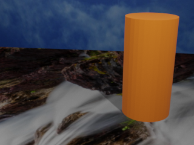
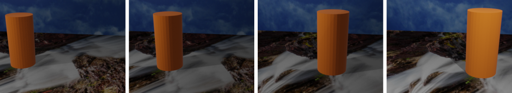

ASN3
How does a Robot See the World?
Deadline
Mar 04, 2022 at 11:59:59 PM (Individual Submissions).
What you need to do?
Since most of the real-world robots has some form of robot perception: interpretting data from a robot's sensors, in this assignment you'll work on data from a color camera. The reason for the choice of this sensor is because of its cost-effectiveness and the ubiquitous nature of the sensors. Moreover, one can achieve a numerous set of tasks with images/video from a color camera.
In this assignment, you'll learn how to interpret color images using Python, Numpy and OpenCV to find/detect a cylindrical "orange" barrels in an
.mp4 video, which acts as our makeshift replacement for a disaster survivor. For the purposes of this assignment, there is only one survior/barrel in every frame of the video and is placed vertically on the ground. A sample image from the video is shown in Fig. 1 and the video preview is given in Fig. 2.

Fig. 1: Sample image frame from the video.
Fig. 2: Video in which barrel has to be detected.
Step 1: Download Data
The data is given in the form of a
.zip file that contains an input color video called
Vid.mp4, the masks video called
Masks.mp4, a sample frame called
Frame0064.png and it's corresponding mask called
Label0064.png. The videos are in
.mp4 format and the images are in
.png format. The data can be downloaded from
here. Feel free to convert the video to frames for debugging.
Step 2: Let's Learn OpenCV
You will be using the images that you downloaded in the last step (extract the
.zip file) in this step. I'll use the following set of questions to guide you in learning a few basic concepts of OpenCV.
- How do you read and display an image you downloaded? Attach a snapshot of your output and code in the document.
- How do you read the image you just downloaded as grayscale? Now, read the image and call this grayscale image as \(I_g\) (Hint: There is a flag in OpenCV's image reading function for this). (a) Now create a \(3\times3\) Sobel kernel for obtaining horizontal edges. Let us denote this kernel as \(K_x\). Estimate X-gradient \(G_x\) as \(K_x \circledast I_g\) (Here, \(\circledast\) denotes the convolution operation). Display the magnitude of \(G_x\) denoted as \(\vert G_x \vert\), (b) Repeat the same for vertical edges, (c) Compute and display the total gradient \(G\) given by \(G = \sqrt{G_x^2 + G_y^2} \). You are not allowed to use cv2.Sobel function for this assignment.
Step 3: Learn About Color Images and Color Spaces
Just like last step, I'll use the following set of questions to guide you in learning a few basic concepts of color images.
- How do you read the color image (RGB) you downloaded? Now read the color image, then extract and display the Red, Green and Blue channels. Attach a snapshot of this in the document. What do you observe in each of the channels?
- Convert the RGB image to HSV colorspace (Hue, Saturation and Value) and display the HSV image. Attach a snapshot of this in the document. What differences do you visually observe between the RGB and HSV image? Why is one likely better than the other?
Step 4: Your First Color Thresholder Application
Our human vision is really good at focusing at a particular color of interest. For e.g., when I ask you to focus on an "orange" colored ball, you can do it with ease, however I never told you specifically what "orange" means. You could still focus on the "orange" color since you have learned in your childhood how the color "orange" looks like. Similarly, we want to teach our robot to foucus/detect a certain colored object. Let us consider that we are working on RGB images. The color "orange" has a set of RGB values, however since this is a range, you'll need to make all the values zero which are "not orange". For e.g., an RGB value of \([255,145,0]\) is the stereotypical orange color but the RGB values of \([209, 122, 9]\) and \([212, 120, 0]\) are also different shades of orange (see Fig. 3 for an example). Now, answer the following fundamental question:
- What factors make the same object color appear different on the captured image? List five factors (feel free to list more).
Let's say, we have a set of images across varying factors that can affect the way the captured image "looks". A simple example of how the "orange" barrel looks under different conditions is given below.

Fig. 3: The same "orange" barrel looks different under different conditions.
Now implement/answer the following:
- Implement a color thresolder to detect only the "orange" color of the barrel on RGB color space. Note that you should not change your thresolds with change in image/frame. Run this on all the frames of the video and output a video that has the "orange" color and every other color is made black. Sample output is shown in Fig. 4 and side-by-side input and "ideal" output video are shown in Fig. 5.
- What are the issues with the simple color thresolder you implemented in the previous step?
- You can think of a thresolding operation as a weighing function that maps input RGB to output where only "orange" has a weight of 1.0 for all channels (the color is passed as in, i.e., each channel is multiplied by 1.0) and all other colors have a weight of 0.0 for all channels (the color gets multiplied by 0.0, making it black). If \(w(I_i) \in \mathbb{R}^{3\times1}\) is a weight vector that is a function of the input that maps the input \(I_i\) to output \(I_o\) such that \(I_o = w(I_i)\) is valid per-pixel. Now, one can use any fancy function that controls how one can measure non-orangeness from the "best" orange color. One such common function is to use a Gaussian since it is data driven (can find the "best" orange color given a set of examples). The probability of "orangeness" (ranging from 0 to 1 where 0 indicates "not orange at all" and 1 indicates "as orange as it gets") of a RGB pixel location \(\mathbf{x} \in \mathbb{R}^{3\times1}\) is given by \( p(\text{orangeness}\vert \mathbf{x}) \sim \frac{1}{\sqrt{2\pi \vert\Sigma\vert}}e^{\frac{-1}{2}(\mathbf{x}-\mu)^T\Sigma^{-1}(\mathbf{x}-\mu)}\). Here, \(\mu \in \mathbb{R}^{3\times1}\) is the mean/average of all "orange" samples (pixels) from your set of images and \(\Sigma \in \mathbb{R}^{3\times3}\) is the covariance matrix which again is obtained as the covariance of all "orange" samples (pixels) from your set of images. The Gaussian distribution is also denoted as \(\mathcal{N}(\mu, \Sigma)\) and is also called Normal distribution (Fun fact: it is the same distribution that is used to curve grades). You can use the Masks video given along with the RGB video where at every frame white pixels correspond to the "orange" pixel and black pixels correspond to the "non-orange" pixels. Implement thresholding on the confidence scores you obtained using the Gaussian distribution as described above (if you used the equation above this will be in the range \([0,1]\) and you need to convert it to range \([0,255]\) and Int datatype to make it displayable, but you are free to use any built-in or third-party function for this). Refer to this awesome tutorial for more information about color thresholding using the Gaussian distribution.
- It this method any better than the first method?
- What are the issues in the second method? How can you fix them?
- Use any other color space to make your results "better". What color space did you choose and why? Show a comparison of results with your chosen color space and RGB on example frames or the entire video.
Fig. 4: Left: Sample input, Right: Sample output.
Fig. 5: Input and "ideal" output video.
What you need to submit?
A
.zip file that has a document (feel free to use Word or Google Docs or any other software for this) converted to PDF with the following answers and required codes as mentioned below:
- Code (as .py python files and inside the document as a screenshot or copy pasted text) and sample input and outputs (can be in the form of screenshots) for questions in Step 2. Answer all the questions in order, some questions might not have code or outputs.
- Code (as .py python files and inside the document as a screenshot or copy pasted text) and sample input and outputs (can be in the form of screenshots) for questions in Step 3. Answer all the questions in order, some questions might not have code or outputs.
- Code (as .py python files and inside the document as a screenshot or copy pasted text) and sample input and outputs (can be in the form of screenshots) for questions in Step 4. Answer all the questions in order, some questions might not have code or outputs.
- Separate output videos in .mp4 format for color thresholder using simple thresholding and Gaussian named as SimpleColorThresholder.mp4 and GaussianColorThresholder.mp4 respectively. Here, you can either show the detected mask (white and black, where the image is white on the "orange" pixels and black on the "non-orange" pixels) or the masked image such that only "orange" pixels show their actual color and "non-orange" pixels are black.
- Challenges you faced in solving this assignment along with lessons learned.
- Positive or Negative feedback about this assignment if you have any.
IMPORTANT NOTE:
The submissions are made through ELMS with the name
ASN3_DirID.pdf. Here,
DirID is your directory ID, i.e., the first part of your terpmail email address. For e.g., if your terpmail email address is
ABCD@terpmail.umd.edu, then your
DirID is
ABCD. Keep your submissions professional, grammatically correct without spelling mistakes. Do not use slangs and chat shorthands on your submissions.
You'll get 25% grade penalty for not following the submission guidelines.